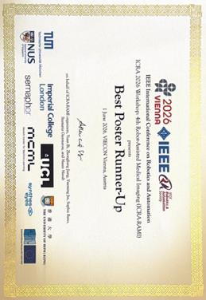

Featured publication · ICRA 2026
A Vision-Language-Action Model for Adaptive Ultrasound-Guided Needle Insertion and Needle Tracking
Yuelin Zhang, Qingpeng Ding, Longxiang Tang, Chengyu Fang, Shing Shin Cheng · 2026 IEEE International Conference on Robotics and Automation
Read paper ↗
Best Poster Runner-Up
4th Robot-Assisted Medical Imaging Workshop (ICRA-RAMI), ICRA 2026